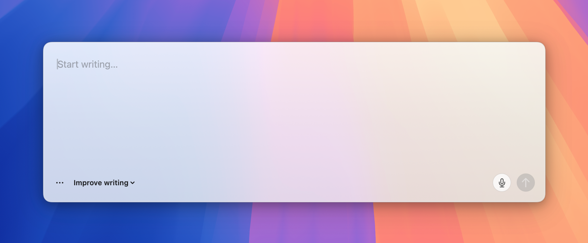
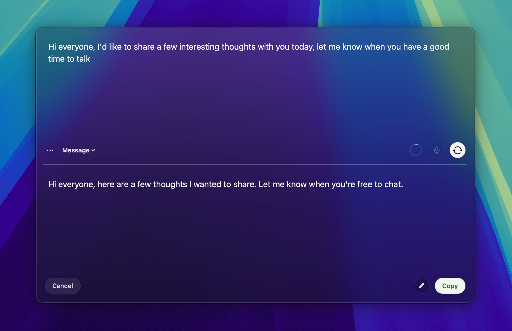

Start a fresh draft
- Snapdraft opens at your saved screen position.
- Type or paste text, then choose a rewrite mode.
- Copy the result.
One shortcut rewrites editable text in place, opens read-only selections in Snapdraft, or starts a fresh draft.

Most small rewrites start in Slack, Gmail, WhatsApp, or another text field. Moving them into a chatbot adds copying and often breaks formatting. It also leaves drafts scattered across tools.
Opening another app to fix one sentence interrupts the work already in front of you. Snapdraft rewrites the selected text where it is.
"Make this clearer" and "turn this into an email" can be saved as rewrite modes instead of typed into a chat each time.
Moving text through a chat tool can strip bullets, links, emphasis, and code. Snapdraft keeps that structure intact.
Snapdraft saves drafts and in-place rewrites locally, including the original text and its replacement.
Select editable text and press your Snapdraft shortcut. The rewrite replaces the original text.
In Settings, editable selections can open in Snapdraft instead.
Snapdraft checks whether text is selected and whether you can edit it.

By default, llama.cpp runs rewrites on your Mac. Your text stays local, and no API key is required.
Connect your ChatGPT account when you prefer OpenAI's models. Snapdraft sends only the text being rewritten, using your account.
Snapdraft keeps bullets, links, emphasis, code, and paragraph breaks through the rewrite and paste.
Use the included modes for errors, tone, emails, and messages. Add your own instructions and arrange the list in Settings.
Speak even where the current app has no mic input. Transcription runs locally through whisper.cpp.
Snapdraft saves drafts and in-place rewrites locally, so you can return to earlier work.
Open a draft or rewrite selected text in place without reaching for the trackpad.
With the local model, Snapdraft rewrites and transcribes on your Mac. Draft history stays there too. If you connect ChatGPT, Snapdraft sends the text you choose to rewrite to OpenAI.
Read the full privacy policy.
Snapdraft.dmg.Applications.